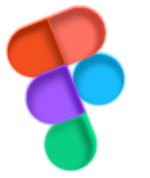

About me
I'm a front-end and web designer passionate about creating unique and functional digital experiences. I started designing early and have since transformed ideas into modern, intuitive, and engaging interfaces.
My mission is to combine creativity and strategy to develop websites that not only capture attention but also communicate the brand's message clearly and impactfully. With expertise in UI/UX, Figma, Framer, and front-end development, I consistently strive to deliver digital solutions that generate real value for businesses and individuals. My goal is simple: to transform concepts into professional, beautiful, and efficient digital projects that connect brands and customers.
What do I create?
Web design
Creation of modern, responsive, and intuitive interfaces, always aligned with the brand identity.
Front-end Development
I transform prototypes into functional websites with clean code, optimized performance, and impeccable usability.
UI/UX Design
Digital experiences designed from scratch, focusing on usability, aesthetics, and strategy.

Prototyping & Interactivity
I use tools like Figma and Framer to create navigable prototypes that bring the client's vision closer to the final product.